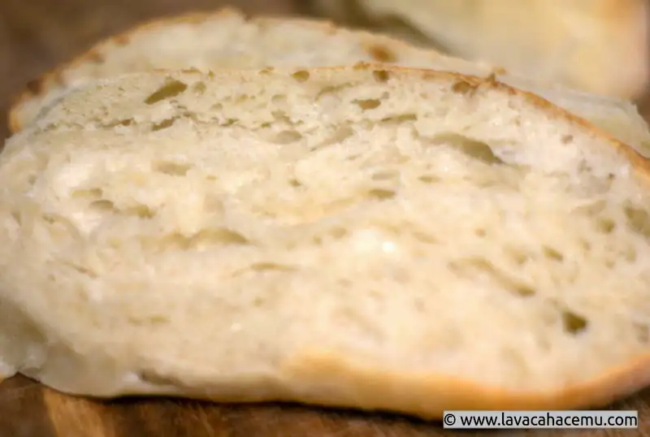

Sunday morning loaves
{kind=link}

{kind=link}
I've been playing around with this recipe for a while now and wanted to get a bit more oven spring, (and man, did it ever come through!!) so I adjusted it with 10 grams more water, it made for some very decent crumb. You'll notice a divergence from previous recipes in the form of measuring by weight instead of "volume". It's much more precise and easier to reproduce. You can play around with the quantities as needed, if, for instance, you substitute 100 gr of bread flour with whole wheat, you'll get a tangy taste, substitute some rye and you get more aromatic bread, albeit with the trade-off of not being as fluffy and airy. I'm just about done writing up this recipe and it just occurred to me that I've never written on how to create a starter.. I'll just have to make another blog post about that, but for now, it's basically equal amounts of water and flour, leave them out for a few days, throw away any liquid that stays on top, feed again and use the amount needed, putting the remainder in the fridge so you can feed it again and use practically indefinitely.
Ingredients
- 500 gr king arthur bread flour
- 310 gr water
- 200 gr starter @100% hydration
- 11 gr salt
Procedure
- Mix everything except for the salt and rest for 2 hours
- Add salt and knead a bit
- Cover with plastic and proof overnight
- Pre-shape and rest ~10 minutes
- Shape and bench proof ~25 minutes
- Bake at 500 °F for 15 minutes